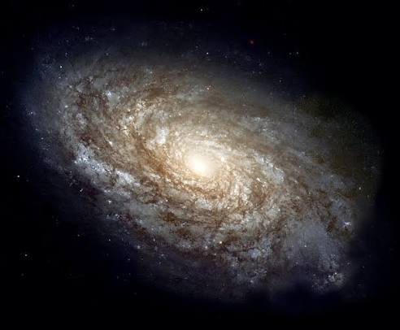
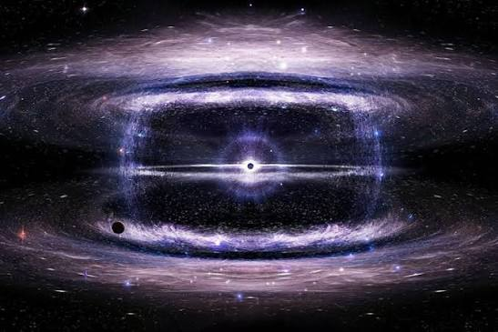
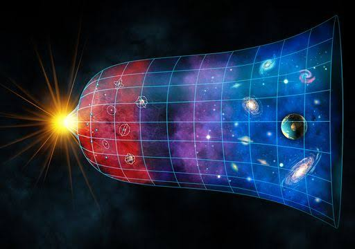
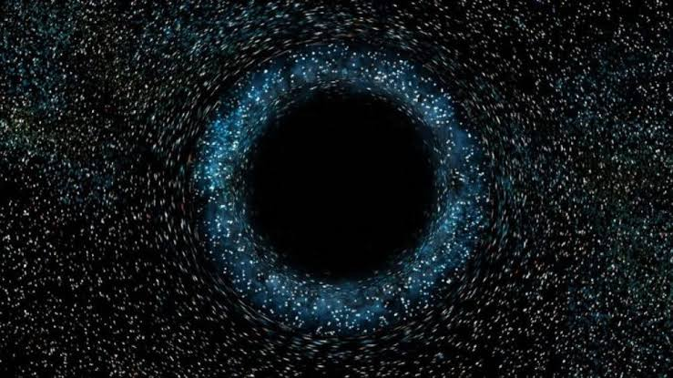
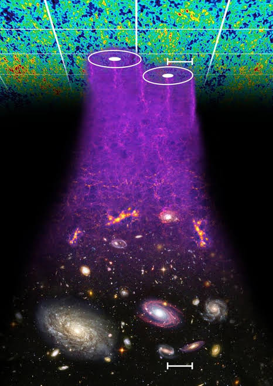
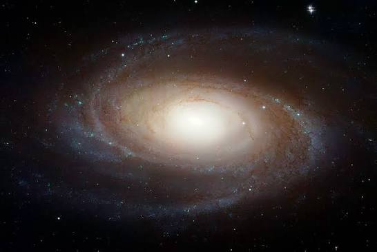
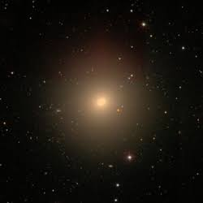
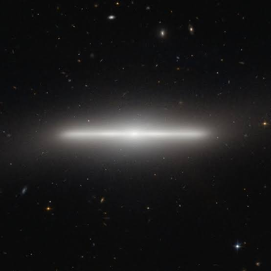
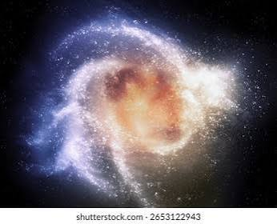
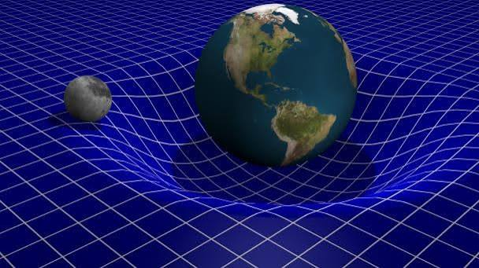

Nuestro stand durante la presentación del proyecto final
Qué encuentra el visitante.
| El experimento físico muestra | El sitio web muestra |
|---|---|
| — | — |
| — | — |

Una mirada al gran universo.
Es la rama de la ciencia y astronomia que estudia y analiza el universo, estudia su origen, su evolucion, las estructuras a gran escala y sus posibles finales, teniendo en cuenta como surgio y como va evolucionando
La cosmologia une la fisica y la astronomia, poniendo a prueba las leyes naturas a una escala gigante, intentando responder preguntas como ¿De donde venimos?, y haciendonos ver que somos muy pequeños en el gran cosmos, revelando asi nuevas posibilidades tanto de vida como de planetas, astros y nuevos elementos quimicos.
Es la forma en la que se organizan y se distribuyen las galaxias, y se extienden por el universo. Teniendo en cuenta que no están repartidas al azar en universo , sino que por la fuerza de gravedad se agrupan y se unen mas, creando estructuras mas grandes
Es importante porque gracias al mapeo actual del universo, se puede mirar al pasado e identificar los pequeños puntos mas densos del universo antiguo, aparte la formacion de las galaxias nos dice donde esta la mayor parte de la materia oscura, que contribuye al 95% de materia en el universo, a su vez se mide la energia oscura que es la fuerza"misteriosa" que impulsa al universo a expánderse de manera acelerada, analizando la distribucion de las galaxias se puede medir el ritmo de expancion
Reconocer la evolución de las galaxias en el universo, y sus estructuras.
Nodos: Puntos de intersección altamente densos donde se concentran los cúmulos de galaxias. Filamentos: Largas “hebras” de gas y galaxias que conectan los nodos entre sí. Muros: Estructuras planas y extensas formars por miles de galaxias que extremadamente baja.

Materia necesaria para generar gravedad en el universo, a su vez generando grandes cúmulos de gas necesario para hacer estructuras más grandes.

Ocurre hace aproximadamente 13.800 millones de años Primeros elementos: Helio, e Hidrógeno Empieza desde una singularidad, un punto de densidad y temperaturas muy altas que por el momento sigue siendo infinito. Inflación: expansión acelerada, mayor a la velocidad de la luz. Enfriamiento: Cuando el espacio se extiende el universo se enfria, al transformar energía en materia. Generando elementos mas pesados apartir del hidrogeno y del helio

Fuerza miseriosa necesaria para la expansión del universo, esta va "alimentando" al universo, funcionando como el motor necesario para la expancion, mientras se va enfriando, creando nucleos mas pesados y a su vez estrellas, planetas, satelites naturales, y asteroides. Siendo al rededor del 68 a 70% del universo.

Son ondas sonoras congeladas que viajaron en el espacio-tiempo primitivo caliente, al irse enfriando el cosmosmos estas ondas sonoras antes a temperaturas muy calientes, no desaparecieron por completo, sino que dejaron unas huellas geometricas que hasta el dia de hoy se estudian para aproximar los años de galaxias, y demas objetos del universo.

Son 4 tipos de galaxias, las espirales, que se caracterizan por tener un nucleo central brillante y brazos curvados que giran al rededor como iun remolino, conteniendo mucho polvo, y en los brazos estrellas jovenes, mientra que en el centro hay estrellas mas viejas. Las elipticas, estas tienen forma de circulo estirado o de ovalo tridimensional, no tiene brazos ni espirales, contiene una cantidad de gas y polvo baja, sus estrellas suelen ser viejas. Las lenticulares son galaxias en forma de disco con un abultamiento central pero sin brazos ni espirales definidos. Las irregulares estas no tienen una forma geometrica definida ni simetrica, teniendo una estructura caotica, con mucho gas y polvo, con una gran cantidad de estrellas jovenes




Dictamina que el espacio y el tiempo, no son variables independientes, sino que las dos van unidas formando un tejido de 4 dimensiones llamado espacio-tiempo. Los objetos con masas mas grandes deforman de mayor forma el tejido a su al rededor (espacio-tiempo). La atracción gravitatoria en realidad es simplemente como los objetos avanzan en línea recta, por el espacio-tiempo ya deformad, por esto se ve que pueden seguir diferentes curvas, pero no por una fuerza de atracción. La deformación del espacio-tiempo por objetos masivos (galaxias) puede llegar a curvar la dirección de la luz.

Es un conjunto de 10 ecuaciones matemáticas interconectadas Forma compacta de la formula: G_μν + Λg_μν = (8πG / c⁴) T_μν
Geometría del espacio-tiempo
G_μν: Tensor de Einstein, describe la curvatura total del espacio-tiempo Λ: Es la constante cosmologica, asociada con la energía oscura, necesaria para la expansión del espacio-tiempo g_μν: Tensor métrico, es la estructura matemática que permite medir la distancia y el tiempo de la curva (8πG / c⁴): Es la constante de proporcionalidad, incluye la constante de gravedad(G), y la velocidad de la luz (c) T_μν: Tensor de energía-impulso, contiene el movimiento, la energía y la presión de un objeto
Las magnitudes que hacen concreto el fenómeno.
Qué encuentra el visitante.
| El experimento físico muestra | El sitio web muestra |
|---|---|
| — | — |
| — | — |